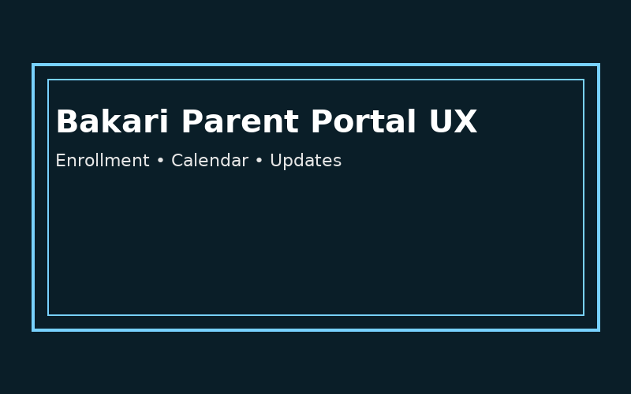
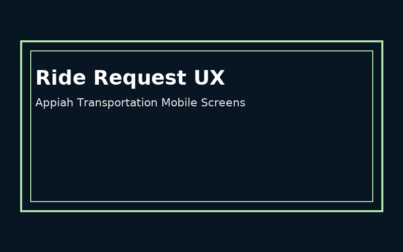

Interface explorations and flows supporting parent enrollment, event RSVP, and ride booking experiences.

Bakari Parent Portal UX
Enrollment • Calendar • Updates
School Experience
Bakari Academy – Enrollment & Parent Portal Concept
Concept wireframes and high-level layouts for a parent portal where families can enroll, view calendars,
and receive updates about their children in a simple, mobile-friendly experience.
Figma-style
Web UX

Event RSVP UX
Girls Gracefully Growing Mobile Flow
Events
Girls Gracefully Growing – Event RSVP Flow
A mobile-first RSVP experience that lets parents quickly browse events, view details,
and confirm attendance with minimal friction, designed for clarity and ease of use.
Mobile UX
Event Flow

Service Booking
Appiah Transportation – Ride Request Interface
Interface concept for scheduling rides, saving favorite locations, and viewing driver details for a
family-focused transportation service, inspired by modern mobility apps.
Prototype-style
Service UX